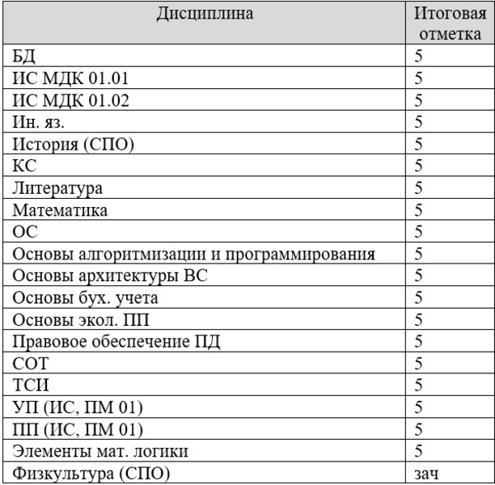

Освоение профессиональных компетенций

В данном подразделе хочется отметить достижения в освоение профессиональных компетенций.
Основные достижение в данной сфере это получение высших балов за учебные, а также производственные практики, создание курсовой работы, своевременное выполнение практических работ, а также защита проектов.
Стоит отметить, что основополагающими задачами в профессиональной сфере были создание информационных систем на платформах 1С: Предприятие, Visual Studio, SQL, а также автоматизация бизнес-процессов различных предприятий.
Был изучен язык программирования С#.